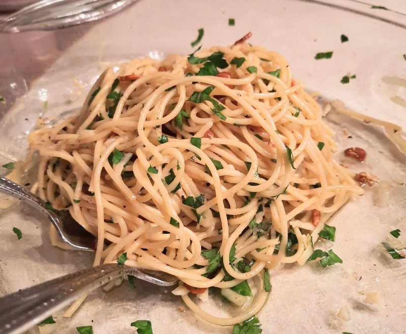

Spaghetti

Description
No two aglio e olio recipes are alike, but this one is pretty true to the classic method. The key is slowly toasting the garlic slices to a perfect golden brown in the olive oil.
Ingredients
- Spaghetti
- Olive Oil
- Garlic
- Seasonings
- Parmigiano-Reggiano cheese
Steps
- Boil the spaghetti.
- Toast the garlic in olive oil.
- Stir the seasonings into the pasta, then stir in the garlic and oil.
- Toss with cheese.